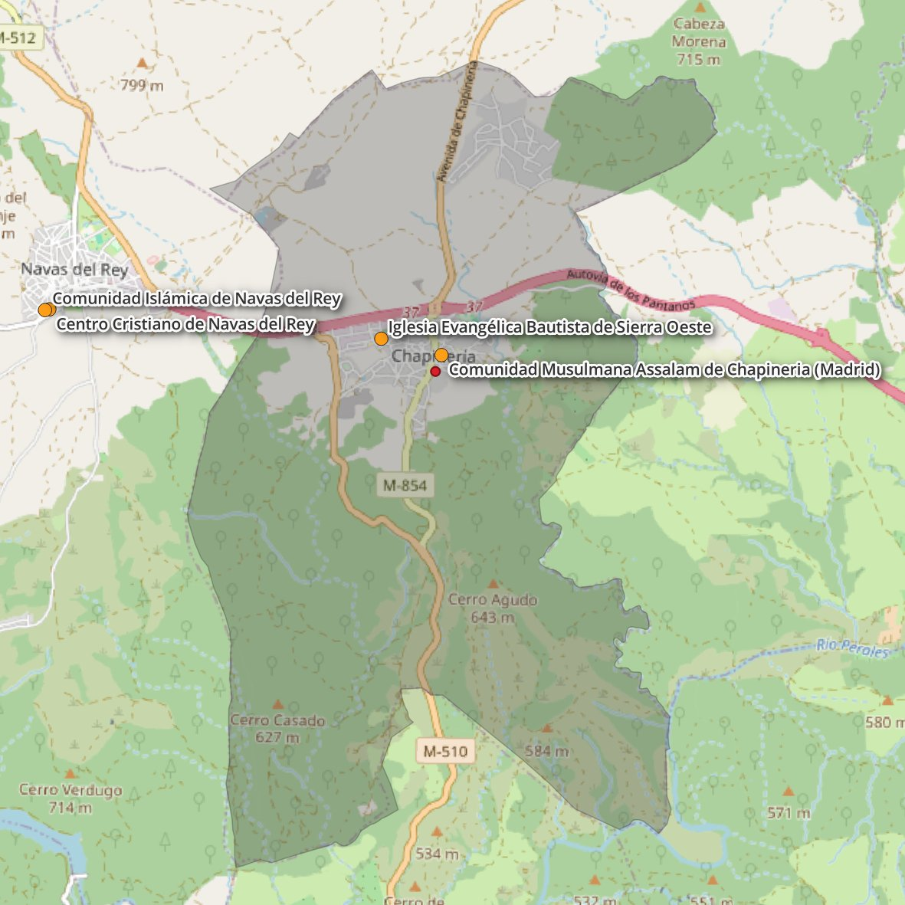
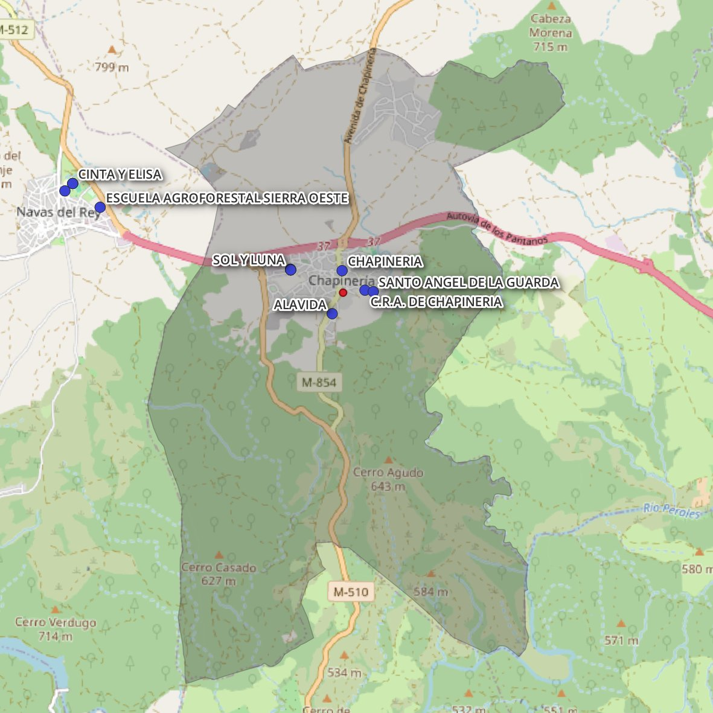

Puntos de interés en el territorio parroquial
Parroquia Concepción de Nuestra Señora (Chapinería) · Arciprestazgo de San Martín de Valdeiglesias
Entidades religiosas no católicas

2 entidades religiosas no católicas en el territorio de la parroquia.
Evangélicos (1)
- Iglesia Evangélica Bautista de Sierra OesteCalle Jardines 2, Chapinería
Musulmanes (1)
- Comunidad Musulmana Assalam de Chapineria (Madrid)Calle Carpinteros 2, Chapinería
Fuente: Registro de Entidades Religiosas del Ministerio de la Presidencia, Justicia y Relaciones con las Cortes. Situación en el mapa: dirección geocodificada con CartoCiudad (IGN) o Nominatim (OpenStreetMap).
Centros educativos

5 centros educativos en el territorio de la parroquia (público: 4, privado: 1).
| Centro | Tipo | Titularidad | Domicilio | Web |
|---|---|---|---|---|
| ALAVIDA | Centro privado de educación primaria | Privado | Calle de Prudencio Melo, 37, 28694 Chapinería | Página web |
| CHAPINERIA | Escuela municipal de música | Público | Calle Colmenar, 13, 28694 Chapinería | Página web |
| SANTO ANGEL DE LA GUARDA | Colegio de educación infantil, primaria y secundaria | Público | Calle RODETAS, 19, 28694 Chapinería | Página web |
| SOL Y LUNA | Escuela infantil-casa de niños | Público | Calle Marqués de Villanueva de la Sagra, 1, 28694 Chapinería | Página web |
| SUR-3, CHAPINERIA | Zona casas de niños | Público | Calle Marqués de Villanueva de la Sagra, 1, 28694 Chapinería | Página web |
Fuente: registro de centros educativos de la Comunidad de Madrid. Solo se recogen los centros de alta.